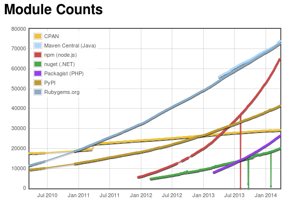

Multiplayer Pong
Rapid Web App Development
The Game and its Terminology
The Field
Controllers
The Agent
Layer 1: Node.js
- Server side JS
- Chrome's Javascript parser: The V8
Input/Output Operations: Traditional Approach
- Default approach of most of the languages used for web development

Nonblocking IO: Dealing with the C10k problem
- Node embraces the Non blocking IO (asynchronous IO) paradigm
- No threads - one single process

All In One
Node.js serves as both the parser and the server - our web-app need no http server
Nonblocking IO
fs.readFile('./file', function (err, data) {
if (err) throw err;
console.log(data);
});
JS Idioms
setTimeout(function () {
// do stuffs
}, 1000);
Hello World
var http = require('http');
http.createServer(function (req, res) {
res.writeHead(200, {'Content-Type': 'text/plain'});
res.end('Hello World\n');
}).listen(80, '127.0.0.1');
$ node hello.js
Node Ecosystem - NPM
- Integral part of Node
- Package manager
- Dependencies manager
- Encourage code sharing
$ npm publish
Taking Over the World

Community in Exponential Growth
Aug 2013
Community in Exponential Growth
Nov 2013
Community in Exponential Growth

Mar 2014
Express.js
var express = require('express');
var app = express();
app.get('/', function(req, res){
res.send('hello world');
});
app.listen(3000);
Middlewares
var express = require('express');
var app = express();
app.use("/shared_dir", express.directory("/directory"));
app.listen(3000);
Socket.io
- Bi-directional IO
- Pure JS
- Both server and client
- Event driven model
- JSON
- Fallbacks
Socket.io Example
Server Side
var io = require('socket.io').listen(80);
io.sockets.on('connection', function (socket) {
socket.emit('news', { hello: 'world' });
socket.on('my other event', function (data) {
console.log(data);
});
});
Client Side
<script src="/socket.io/socket.io.js"></script>
<script>
var socket = io.connect('http://localhost');
socket.on('news', function (data) {
console.log(data);
socket.emit('my other event', { my: 'data' });
});
</script>
Determining Paddles Movement
Controller
$("#up,#down")
.bind("touchstart", function (e) {
socket.emit("direction", field_id, controller_id, \
controller_side, this.id === "up" ? 1 : -1);
})
.bind("touchend", function (e) {
socket.emit("direction", field_id, controller_id, \
controller_side, 0);
});
Agent
socket.on('direction', function (field_id, controller_id, \
side, controller_direction) {
// get field_socket
var field_socket = getFieldSocket(socket, field_id);
if (field_socket === false) {
return;
}
// update controller direction
if (typeof controllers[field_id][controller_id] === 'undefined') {
return;
}
controllers[field_id][controller_id].direction = \
controller_direction;
var direction = /* ... Sum controllers direction for the given side */;
if (direction > 0) {
direction = 1;
}
if (direction < 0) {
direction = -1;
}
field_socket.emit("direction", side, direction);
});
Field
socket.on("direction", function (side, direction) {
paddle = side === 0 ? pong.leftPaddle : pong.rightPaddle;
if (direction === 1) {
paddle.moveUp();
} else if (direction === 0) {
paddle.stopMoving();
} else {
paddle.moveDown();
}
});